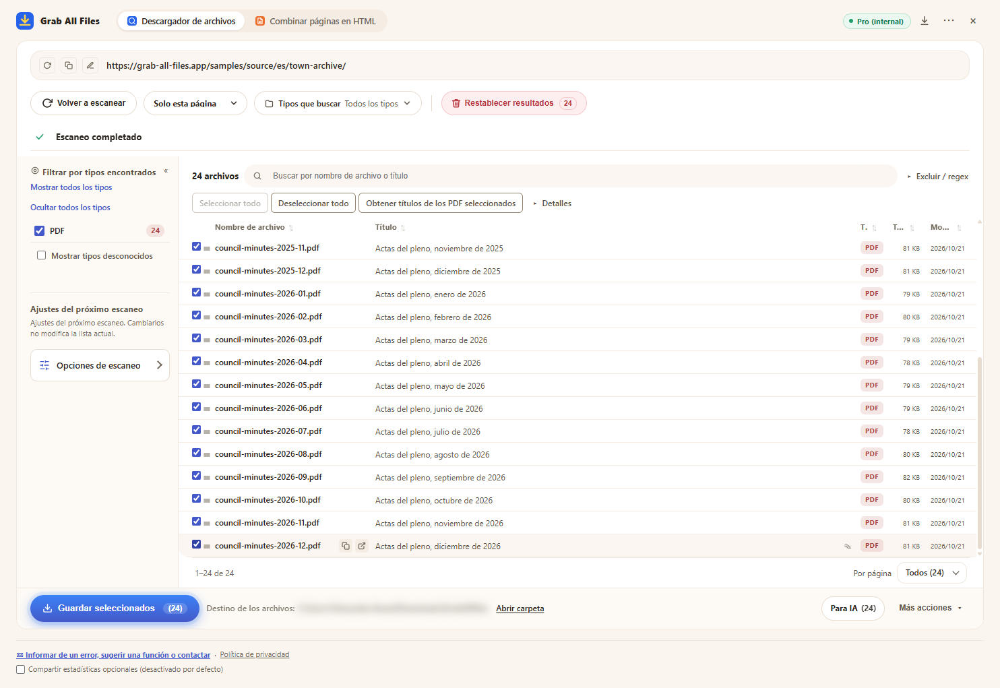

Resultado real de Grab All Files
24 PDF descargados en una ejecución (Pro)
Se analizó el archivo de actas del pleno de un municipio ficticio (un acta por mes, de enero de 2025 a diciembre de 2026: 24 PDF), se seleccionaron todos los PDF y se guardaron en una sola ejecución. Gratis guarda hasta 10 archivos por descarga, por lo que harían falta tres ejecuciones; Pro no tiene límite por descarga. La extensión puso los nombres de archivo a partir del título de cada PDF.
Archivos generados
- Actas del pleno, enero de 2025.pdf
- Actas del pleno, febrero de 2025.pdf
- Actas del pleno, marzo de 2025.pdf
- Actas del pleno, abril de 2025.pdf
- Actas del pleno, mayo de 2025.pdf
- Actas del pleno, junio de 2025.pdf
- Actas del pleno, julio de 2025.pdf
- Actas del pleno, agosto de 2025.pdf
- Actas del pleno, septiembre de 2025.pdf
- Actas del pleno, octubre de 2025.pdf
- Actas del pleno, noviembre de 2025.pdf
- Actas del pleno, diciembre de 2025.pdf
- Actas del pleno, enero de 2026.pdf
- Actas del pleno, febrero de 2026.pdf
- Actas del pleno, marzo de 2026.pdf
- Actas del pleno, abril de 2026.pdf
- Actas del pleno, mayo de 2026.pdf
- Actas del pleno, junio de 2026.pdf
- Actas del pleno, julio de 2026.pdf
- Actas del pleno, agosto de 2026.pdf
- Actas del pleno, septiembre de 2026.pdf
- Actas del pleno, octubre de 2026.pdf
- Actas del pleno, noviembre de 2026.pdf
- Actas del pleno, diciembre de 2026.pdf
La extensión con 24 PDF seleccionados, justo antes de guardar (la ubicación de guardado está difuminada)

Cómo se hizo
- Página de origen
- /samples/source/es/town-archive/
- Extensión
- Grab All Files 5.8.31
- Navegador
- Chrome 156.0.8078.48 (Windows 11)
- Plan
- Pro
- Fecha
- 2026-10-28
- Ajustes
- Profundidad de enlaces: Solo esta página
- Tipo de archivo: solo PDF
- Archivos seleccionados: 24
- Guardado en: la carpeta de descargas del navegador (carpeta GrabAllFiles)